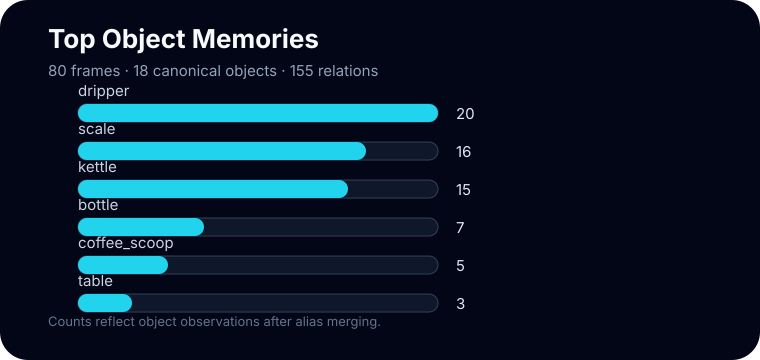

Turn egocentric video into queryable world memory
A scene graph converts first-person observations into objects, relations, timestamps, and provenance. That structure lets a system ask what was visible, what the hand touched, and what task state was active.
Sample Graph
Memory Graph At A Glance

The graph is not a picture of pixels. It is a memory structure: objects become nodes, interactions become edges, and timestamps make the graph temporal.
These query patterns are intentionally simple so the output is easy to inspect before adding detector or language-model components.
Explore A Query
This panel reads the sample `scene_graph.json` and renders object, interaction, and state views directly in the browser.
Object memory: kettle
The object timeline shows where the kettle appears across task segments and which interaction text is attached to each timestamp.
Graph Building Blocks
`kettle`, `scale`, `coffee_dripper`: entities that persist across frames.
`hand_grasps(kettle)` or `visible_in(kettle, frame)` connects entities.
Records whether a fact came from caption objects, interaction text, or action labels.
Concept Studio
These ideas turn video annotations into a memory that can be queried. Click a concept to see the structure behind it.
Scene graph
A scene graph is a structured memory: nodes are objects or actors, and edges are relations such as visible_in or hand_grasps.
Schema Checklist
timestamp, subtask, action, objects, camera pose
name, aliases, first seen, last seen, observations
type, subject, object, timestamp, confidence
where each graph fact came from